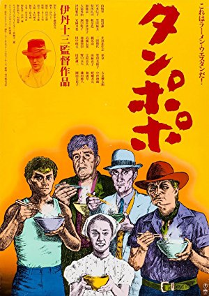

Enjoy Sunday nightat the movies!
Raleigh's oldest and finest nonprofit film society offers classic feature presentations monthly at the Rialto Theatre in Raleigh, NC.
Welcome to The Cinema, Inc.
One of the oldest continuing film societies in the nation, The Cinema, Inc. was founded in 1966 by a group of IBM workers using borrowed projection equipment that was installed in the Raleigh Little Theater. The organization was founded as a nonprofit whose purpose was "the presentation of films of educational, cultural, artistic and historical interest." After about 15 years the organization moved to the Rialto in the city's Five Points neighborhood. The group has been screening selections on the second Sunday of each month ever since. Each screening, which averages over 300 attendees, is accompanied by film notes emailed to members.
More film notes! From Season 42 through Season 53!
You may have noticed that when film notes are emailed to members, they are now incorporated into the website. We are happy to announce that the individual season pages for Seasons 42 through 48 have been updated to include film notes! If you have film notes from Season 41 or earlier (anything before October 2007), our webmistress would love to hear from you. Please contact us at thecinemainc@gmail.com so we can put her in touch!
Presenting Our 54th Season
You can either download the PDF brochure for our 2019-2020 season or you can view the Season 54 page. Please note that the 2019-2020 season is sold out. To be added to our mailing list for next season's brochure, send an email to thecinemainc@gmail.com with your name and contact information.
Screening NEXT
-
 September 8, 2019Directed by Sergei M. Eisenstein; Starring Aleksandr Antonov, Vladimir Barskiy, Grigoriy Aleksandrov, Ivan Bobrov
September 8, 2019Directed by Sergei M. Eisenstein; Starring Aleksandr Antonov, Vladimir Barskiy, Grigoriy Aleksandrov, Ivan Bobrov
Battleship Potemkin (in memory of Jerry Folden)
(in memory of Jerry Folden)
Soviet Union, 1925, 66 min, B&W, Not Rated, Silent w/intertitles
In 1905 the crew of the Russian battleship Potemkin were fed up with their maggot-ridden meat rations and decided it was time to rise up against their officers. After overtaking their ship and pulling into Odessa, word of their rebellion spread and ignited a revolutionary spirit. Soon the Czar sent his troops to quell the uprising and many protesters and innocents alike were slaughtered. This exhilarating film was shot in black and white with stunning use of montage. The scenes of the uprising are rousing and incredible. The Odessa staircase scene, where a baby carriage with baby in tow glides slowly down the stairs, is one of the most famous.
Film Notes (Andrea Mensch): There are certain works of art that those of us who would like to be culturally literate need to be familiar with and there are certain names that educated people pride themselves on recognizing as great artistic innovators. (Beethoven, Michelangelo, and Shakespeare come to mind.) The name Sergei Eisenstein would be an example of this in the world of film. Much has been written about the importance of Eisenstein's oeuvre (both theoretical and cinematic) in the development of the medium of film, and yet, how many self-proclaimed film lovers in 2019 have actually seen his most famous film, Battleship Potemkin (1925)? The Cinema, Inc. is happy to provide you with an opportunity to do so at the beginning of our 2019-20 season for a variety of reasons.
First, there is the personal: One of our most steadfast, enthusiastic, and beloved board members, Jerry Folden, passed away last year. Over the decades that Jerry was a member of The Cinema, Inc.'s board, it became clear to anyone who knew Jerry that Potemkin was his favorite film. We are therefore happy to choose this film as an homage to Jerry's exquisite sensibilities. And then, there are myriad other reasons that this is an opportune time to show this film. We live in an age where complexity and nuance are increasingly dismissed, particularly when it comes to politics. One can see why literal-minded people might simply see Potemkin as early Marxist propaganda, but a closer look at the film and its history reveals that it is much more than that. Yes, it's true that Eisenstein was a relatively young idealistic Marxist when he directed the film and he believed in the ultimately humanistic goals of the Russian Revolution. (We know that he would later be bitterly disillusioned by the ways in which the Stalinist regime corrupted those ideals.) But the film transcends its immediate political goals because of Eisenstein's understanding of the potential of cinematic language as a tool for enlightenment.
Like many of his intellectual contemporaries, young Sergei embraced a dialectical way of looking at the world. He understood the seductive power of Hollywood imagery (he deeply admired the work of D. W. Griffith, for example), but he also wanted to promote a more critical way of seeing. He came up with his theories of montage to accomplish this and Potemkin is perhaps the clearest example of that kind of film-making. Eisenstein dispenses with the invisible kind of continuity editing practiced by Griffith and encourages us to be aware of how scenes are put together to make us think beyond the surface of the story. He was also wary of the idea of the "larger than life" movie star and felt that the best way to capture the concerns of ordinary people was to cast those very people in his films. While few of the characters in the film are named, the use of close-ups at key moments and the juxtaposition of intense facial expressions with their larger context can still move us deeply. The so-called Odessa steps sequence is perhaps the most famous example of this. When the czarist regime tries to quell the early signs of revolution by essentially massacring innocent civilians, we are not overwhelmed with gory scenes of blood and guts, but we are moved to feel compassion and then outrage at the injustice through the use of montage. Not surprisingly, many filmmakers from Alfred Hitchcock to Brian de Palma learned from the example of this scene and there are many instances where younger directors would visually quote from Battleship Potemkin.
There are, indeed, several ways in which a 94-year-old film about a mutiny on a Russian battleship and its subsequent effects on the people of Odessa can be relevant to Raleigh in 2019. We can marvel at Eisenstein's artistic ingenuity, we can learn something about history from this fictional recreation of an actual historical event, and we can perhaps get a glimpse of hope for our times when we witness the film's inspirational ending.Read Roger Ebert's review of Battleship Potemkin at Great Movies. -
 October 13, 2019Directed by Duncan Jones; Starring Sam Rockwell, Kevin Spacey, Dominique McElligott
October 13, 2019Directed by Duncan Jones; Starring Sam Rockwell, Kevin Spacey, Dominique McElligott
Moon
UK/USA, 2009, 97 min, Color, R
Sam Rockwell stars as Sam Bell, working a three-year shift by himself on the moon and supervising a new kind of energy mining to boost the depleted reserves of resources on Earth. His only companion is a robot called GERTY (voiced by Spacey) who manages the base and looks after Sam's every need. Sam's shift is nearly over and recently he has been going stir crazy. Distracted, he crashes his moon rover and wakes up later in sick bay. He has orders not to go outside, but does so anyway. He finds GERTY exhibiting strange behavior and the environment is not quite what it appears to be. The film is tantalizing as it draws us in and then pushes us away.
-

November 10, 2019Directed by Jûzô Itami; Starring Ken Watanabe, Tsutomu Yamazaki, Nobuko Miyamoto
Tampopo
Japan, 1985, 114 min, Color, Not Rated, Japanese w/subtitles
Few movies did more to introduce Westerners to contemporary Japan and its sense of humor than this culinary comedy. It is a series of meditations on food - many short sketch-like pieces lasting but a few minutes. For example, an etiquette teacher teaches her students how to eat Italian pasta, which they want to slurp in the Japanese manner. A gangster has kinky sex with his girlfriend using crazy food items as aphrodisiacs. The main vignette is the story of pixieish Tampopo, a middle-aged single mother and owner of a failing ramen shop. A truck driver, Goro, and his buddy Gun offer to help Tampopo perfect her recipe and turn the shop into a thriving business.